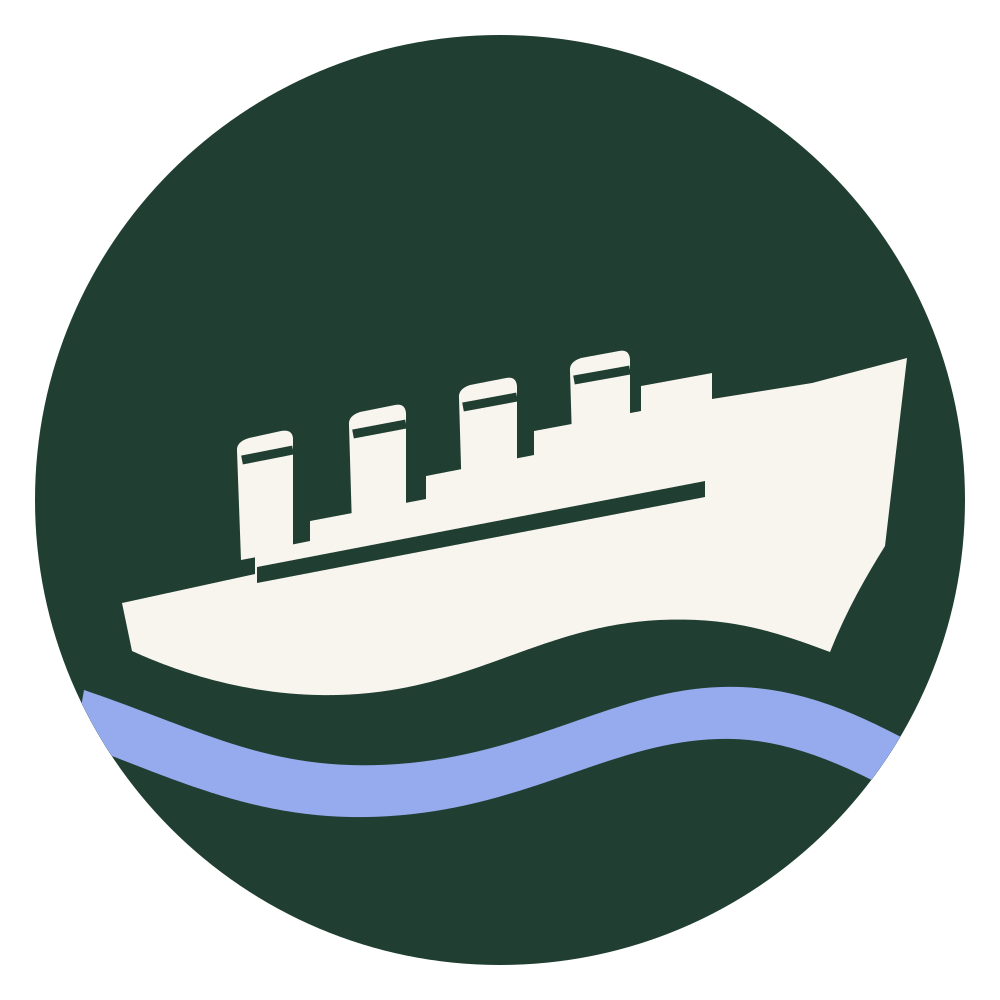

1
Why was Titanic significant to Southampton?
Explore individual experiences and use historical evidence to make a judgement about significance.

RememberingFour history lessons. Two science lessons. A flexible unit of work created by teachers for Key Stage 3.
Teach the history lessons in sequence. Add Watertight bulkheads after Lesson 2 and Keeping afloat after Lesson 3, or teach both science lessons at the end of the unit.
Introduction & lesson outlines PDF · 0.7 MBExplore individual experiences and use historical evidence to make a judgement about significance.
Examine the idea of an unsinkable ship and consider what makes an event a disaster.
Evaluate evidence and competing explanations of responsibility.
Investigate local and national effects, and changes in sailing and shipping.
Use a model ship to investigate flooding and the effectiveness of bulkheads.
Investigate and evaluate different ideas for preventing a ship from sinking.
Remembering Titanic Lessons © 2023 by Wonyong Park, Neta Shaby, Rachele Newman, Megan Barton, Christopher Dale, Ashleigh Fair, Natalie Harrison, Mary Shepherd and Christopher Zieba is licensed under CC BY-NC-SA 4.0. Give appropriate credit, indicate changes, use the materials for non-commercial purposes and share adaptations under the same licence.
Explore the Titanic Inquiry Project for historical testimony and records.
Titanic Science — Teacher GuideJeannie Finton · Google Drive PDFVideos selected for classroom exploration: